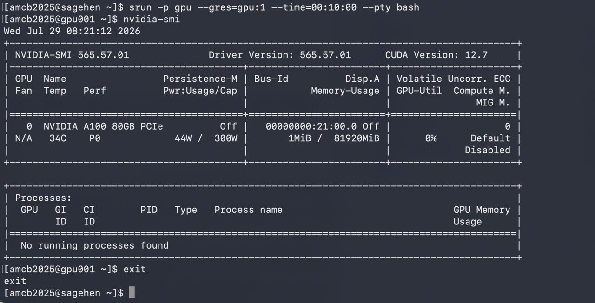

All in One View
Content from Introduction to GPU Computing
Last updated on 2026-08-24 | Edit this page
Estimated time: 20 minutes
Overview
Questions
- What are GPUs and why use them?
- When is GPU acceleration beneficial?
- What workloads suit GPU computing?
- How do GPUs differ from CPUs?
Objectives
- Understand GPU architecture and benefits
- Identify GPU-suitable workloads
- Know when to use GPUs vs CPUs
- Understand cost-benefit tradeoffs
What is a GPU?
GPUs (Graphics Processing Units) are specialized processors optimized for: - Parallel computation (thousands of threads simultaneously) - High memory bandwidth (fast data access) - Matrix operations and tensor computations - Deep learning and machine learning
Sagehen GPU Hardware
Sagehen has 10 GPUs across multiple nodes (confirmed May 2026): 4× A100 (80 GB), 4× L40S (48 GB), 2× RTX PRO 6000 Blackwell (96 GB). For full hardware breakdown see README.md or Workshop 16 episode 02.
Node Configuration
- NVIDIA A100 (×4): 80 GB HBM2e memory (highest performance)
- NVIDIA L40S (×4): 48 GB GDDR6 memory (deep learning optimized)
- NVIDIA RTX PRO 6000 Blackwell (×2): 96 GB GDDR7 ECC memory (the largest GPU memory on Sagehen)
10 GPUs available across the cluster
GPU Specifications
| GPU | Memory | Performance | Quantity | Best For |
|---|---|---|---|---|
| A100 | 80 GB | Highest | 4 | Large models |
| L40S | 48 GB | Very High | 4 | Deep learning |
| RTX PRO 6000 | 96 GB ECC | Very High | 2 | Largest-memory models / ECC workloads |
Choosing the Right GPU
- Training the largest models (>80 GB): RTX PRO 6000 (96 GB) — the largest memory on Sagehen
- Large models (48–80 GB): A100 80 GB or RTX PRO 6000
- Deep learning research (up to 48 GB): L40S 48 GB
- Standard ML: L40S 48 GB
- ECC memory needed: RTX PRO 6000
- Cost-conscious / prototyping: L40S — the least contended of the three, so it is the sensible default for iterating
GPU-Suitable Workloads
Ideal for GPU
- Deep learning (training neural networks)
- Scientific simulations
- Image and video processing
- Matrix operations
- Data analytics at scale
- Physics simulations
- Climate modeling
GPU Programming Models
CUDA (NVIDIA)
- Native NVIDIA programming
- Highest performance
- Requires C/C++ knowledge
- Not for beginners
Getting Started with GPU on Sagehen
Three Steps
- Request GPU in job submission:
--gres=gpu:1 - Activate your GPU-enabled conda environment:
module load miniconda3 && conda activate pytorch_env(no pytorch module exists) - Use framework normally; GPU automatically used
More details in subsequent episodes.
Before Requesting GPU Time
GPU time is expensive and limited. Always: 1. Test on CPU first with small data 2. Verify your code works before GPU submission 3. Estimate GPU benefits for your workload 4. Check if GPU will help (not all code benefits equally)
This saves GPU allocation for researchers who truly need it.
Challenge: GPU or CPU?
For each of the following computational tasks, decide whether it is better suited for GPU or CPU execution. Briefly explain your reasoning.
- Multiplying two 10,000 x 10,000 matrices
- Parsing a 500 MB CSV file line by line
- Training a convolutional neural network on 1 million images
- Sorting a list of 100 integers
- Applying a 3x3 convolution filter across a 4K image
- Performing a recursive depth-first search on a tree with complex branching logic
Matrix multiplication – GPU. Matrix multiplication is a massively parallel operation (each output element is an independent dot product). GPUs with thousands of cores handle this 10-100x faster than CPUs.
CSV parsing – CPU. Line-by-line file parsing is inherently sequential with complex string logic and branching. GPUs provide no benefit here.
CNN training – GPU. Neural network training involves repeated matrix multiplications, convolutions, and gradient computations across large batches – exactly what GPUs excel at (20-50x speedup).
Sorting 100 integers – CPU. The dataset is tiny. The overhead of transferring data to the GPU would exceed any computational benefit. A CPU sorts this in microseconds.
Image convolution – GPU. Convolution applies the same operation independently to every pixel neighborhood – a textbook data-parallel workload ideal for GPU.
Recursive tree search – CPU. Recursive algorithms with irregular branching and random memory access patterns map poorly to GPU architecture. CPUs handle complex control flow far more efficiently.
- GPUs excel at parallel computation for thousands of operations
- Sagehen has 10 GPUs across three types: A100, L40S, and RTX PRO 6000
- Deep learning, simulations, and data processing benefit most
- Framework libraries (PyTorch, TensorFlow) handle GPU automatically
- Not all workloads benefit; profile before investing GPU time
Content from Sagehen GPU Hardware Configuration
Last updated on 2026-08-24 | Edit this page
Estimated time: 30 minutes
Overview
Questions
- What GPU nodes exist on Sagehen?
- How do you check GPU availability?
- What are GPU memory and compute specifications?
- How do you select specific GPU types?
Objectives
- Understand Sagehen GPU inventory
- Check available GPU resources
- Select appropriate GPUs for workload
- Understand GPU memory management
Sagehen GPU Nodes
Sagehen has 10 GPUs across multiple nodes (confirmed by Andrew Wilson, May 2026): 4× A100 (80 GB), 4× L40S (48 GB), 2× RTX PRO 6000 (96 GB).
Sagehen has multiple physical GPU nodes (compute nodes that contain GPU cards). The total number of GPU cards across all nodes is 10.
Available GPU Types
Sagehen provides three tiers of GPU hardware to support a range of research workloads:
- NVIDIA A100 (80 GB HBM2e, 4 cards): Highest performance, ideal for large models and AI research
- NVIDIA L40S (48 GB GDDR6, 4 cards): Excellent balance for most deep learning workflows
- NVIDIA RTX PRO 6000 Blackwell (96 GB GDDR7 ECC, 2 cards): Blackwell generation (compute capability 12.0); the largest GPU memory on Sagehen — very large models, memory-heavy simulation, and professional rendering/visualization
Use sinfo -p gpu --Format=NodeList,Gres,GresUsed to
check current availability.
GPU Capabilities Summary
| Feature | A100 | L40S | RTX PRO 6000 |
|---|---|---|---|
| Memory | 80 GB HBM2e | 48 GB GDDR6 | 96 GB GDDR7 ECC |
| Architecture | Ampere | Ada Lovelace | Blackwell |
| Compute Capability | 8.0 | 8.9 | 12.0 |
| Best for | Large models, AI research | Deep learning, prototyping, professional | Largest models, memory-heavy work |
| Tensor Cores | Yes (3rd gen) | Yes (4th gen) | Yes (5th gen) |
| Performance Tier | Highest | Very High | Highest |
| Quantity on Sagehen | 4 | 4 | 2 |
For detailed specifications, see NVIDIA’s official documentation for
each GPU model. Run nvidia-smi on a GPU node to see the
exact hardware available to your job.
GPU Selection Guide
Choose your GPU based on model requirements: - Very large models (>80 GB): RTX PRO 6000 (96 GB) — the only cards that go beyond 80 GB - Large models (48–80 GB): A100 (80 GB) or RTX PRO 6000; pick by queue availability - Mid-large models (up to 48 GB): L40S or A100 - Standard deep learning: L40S or A100 for faster training; RTX PRO 6000 if you need ECC memory or huge headroom - Prototyping and quick iteration: L40S — the least contended cards, and 48 GB is ample for small models - Memory unsure: Start with L40S (48 GB middle ground)
Monitor GPU memory during development with nvidia-smi to
ensure your model fits.
Checking GPU Availability
Using nvidia-smi

srun session on
gpu001: nvidia-smi confirms the allocated GPU — an A100
80GB PCIe (driver 565.57.01, CUDA 12.7).Requesting Specific GPUs
Multiple GPU Request
BASH
#SBATCH --gres=gpu:4 # Request 4 GPUs (any type)
#SBATCH --gres=gpu:a100:2 # Request 2 A100s specificallyLimits: Per-account GPU limits apply (contact its-hpc@pomona.edu for current limits).
GPU Memory Considerations
Memory Requirements
Choose GPU based on model size:
Very large models (48–96 GB): use A100 (80 GB HBM2e) or RTX PRO 6000 (96 GB GDDR7 — the largest single-GPU memory on Sagehen). For models larger than 96 GB, use model parallelism, gradient checkpointing, mixed-precision training, or DeepSpeed/FSDP to fit larger models across multiple GPUs. - ResNet-3B parameters - Large language models - Large transformer models
Large/medium models (40–48 GB): L40S or A100 (48 GB+ cards) - Standard deep learning models - Fine-tuning mid-sized models - Computer vision models needing high memory - Use RTX PRO 6000 if your workflow benefits from ECC memory or needs headroom to grow
Medium models (20–40 GB): L40S or A100 - Standard deep learning models - Fine-tuning large models - Computer vision models
Small models (under 20 GB): L40S — the smallest card on Sagehen is still 48 GB - Research models - Small networks - Training on smaller datasets
Cost-Benefit Analysis
When A100 is Worth It
- Model > 40GB
- Research requiring tensor cores
- Multi-GPU training
- Production deployment
When L40S is Sufficient
- Standard deep learning (20-48GB models)
- General research
- Training small and medium networks — 48 GB leaves plenty of headroom
- Research prototyping and quick experiments
- Cost-effective for most users, and usually the shortest queue
When the RTX PRO 6000 is the Right Choice
- Models or datasets needing more than 80 GB of GPU memory (nothing else on Sagehen goes this big)
- 40–80 GB workloads when the A100 queue is long
- Workflows that benefit from ECC memory (numerical stability)
- Professional rendering and scientific visualization
- Cutting-edge Blackwell features (compute capability 12.0, 5th-gen Tensor Cores)
Node Selection Strategy
BASH
# For cost-effective general work
#SBATCH --gres=gpu:l40s:1
# For memory-heavy models (48–80 GB)
#SBATCH --gres=gpu:a100:1
# For the very largest models (up to 96 GB)
#SBATCH --gres=gpu:rtxpro6000:1 # verify exact GRES name: sinfo -o '%N %G'
# For quick testing
#SBATCH --gres=gpu:l40s:1
# For production multi-GPU training
#SBATCH --gres=gpu:a100:2Challenge: Choose Your GPU
For each research scenario below, recommend the best Sagehen GPU (A100 80 GB, L40S 48 GB, or RTX PRO 6000 96 GB) and explain your reasoning.
Scenario A: A student is fine-tuning a large language model that requires 60 GB of GPU memory during training.
Scenario B: A researcher is prototyping a small image classifier with a dataset of 1,000 images. They expect the model to use about 4 GB of GPU memory and want results quickly for iteration.
Scenario C: A lab group is training a computer vision model (ResNet-50) that uses about 25 GB of GPU memory and will run for several days.
Scenario D: A computational chemist needs to run a numerical simulation that fits in roughly 40 GB of GPU memory and is sensitive to bit-flip errors. The A100 queue is currently several days deep.
Scenario A: A100 (80 GB) or RTX PRO 6000 (96 GB) The model requires 60 GB of GPU memory, which exceeds the L40S’s 48 GB. Both the A100 (80 GB HBM2e) and the RTX PRO 6000 (96 GB GDDR7) fit the workload — pick whichever queue is shorter. The A100’s HBM bandwidth favours training throughput; the RTX PRO 6000 leaves more memory headroom.
Scenario B: L40S (48 GB) The model only needs about 4 GB, so it fits trivially on an L40S. The L40S cards are also the least contended on Sagehen, so queue waits are typically shortest — exactly what you want when iterating quickly. Tying up an A100 or RTX PRO 6000 for a 4 GB job would waste the cards that large models depend on.
Scenario C: L40S (48 GB) The 25 GB memory requirement fits comfortably on the L40S (48 GB), with excellent compute throughput for a multi-day training run. This leaves the A100s and RTX PRO 6000s free for jobs that genuinely need more than 48 GB.
Scenario D: RTX PRO 6000 (96 GB) The 40 GB workload fits easily, and the RTX PRO 6000’s ECC GDDR7 protects against bit-flip-induced numerical errors during a long simulation — exactly what these cards’ ECC is for. The A100 also offers ECC but has the deep queue; the RTX PRO 6000 delivers the ECC protection with plenty of headroom.
- Sagehen has 10 GPUs across three types: A100, L40S, and RTX PRO 6000
- RTX PRO 6000: Largest memory on Sagehen (96 GB GDDR7 ECC, Blackwell)
- A100: 80 GB HBM2e, best training throughput for large models
- L40S: Best value for most deep learning at 48 GB
- Use –gres=gpu:type:count to request specific GPUs
- Monitor memory usage; request right-sized GPU
- Consider cost-benefit and queue depth when choosing GPU type
Content from Requesting and Allocating GPUs
Last updated on 2026-08-24 | Edit this page
Estimated time: 35 minutes
Overview
Questions
- How do you request GPUs in SLURM jobs?
- What are GPU job parameters?
- How do you run interactive GPU sessions?
- How do you allocate multiple GPUs?
Objectives
- Submit GPU jobs with correct parameters
- Launch interactive GPU sessions
- Request multiple GPUs when needed
- Understand GPU partition and time limits
GPU Job Submission Basics
Simple GPU Job
BASH
#!/bin/bash
#SBATCH --job-name=gpu_test
#SBATCH --partition=gpu
#SBATCH --gres=gpu:1
#SBATCH --time=01:00:00
#SBATCH --output=gpu_%j.log
module load miniconda3
conda activate pytorch_env
python3 train_model.pyKey options: - --partition=gpu: Must request GPU
partition - --gres=gpu:1: Number and type of GPUs -
--time=01:00:00: Max 720 hours per job
Interactive GPU Sessions
Memory and Core Allocation
CPU Allocation
For each GPU, allocate 4-8 CPU cores for: - Data loading - Preprocessing - I/O operations
Why CPU Cores Matter for GPU Jobs
Under-allocating CPUs creates a bottleneck: - GPU sits idle waiting for data - Data loading becomes the limiting factor - Job runs slow despite having GPU
Rule of thumb: 4-8 CPU cores per GPU for efficient
data feeding. Monitor GPU utilization with nvidia-smi to
verify CPU isn’t bottlenecking.
Time Limits
GPU partition allows: - Max 720 hours (30 days) per job - Typical: 1-8 hours for training - Recommended: Start with 1 hour for testing
Batch Scripts with Setup
Complete example:
BASH
#!/bin/bash
#SBATCH --job-name=deep_learning
#SBATCH --partition=gpu
#SBATCH --gres=gpu:a100:1
#SBATCH --ntasks=1
#SBATCH --cpus-per-task=8
#SBATCH --mem=32G
#SBATCH --time=04:00:00
#SBATCH --output=%x_%j.log
#SBATCH --error=%x_%j.err
# Setup environment
module purge
module load miniconda3 cuda/12.2.1
conda activate pytorch_env
cd /bigdata/lab/<labname>/project
# Check GPU
echo "GPU allocation:"
nvidia-smi
# Run training
python3 train.py --gpu 0 --batch-size 32 --epochs 100
echo "Training complete"Challenge: Write a GPU Job Script
Write a complete SLURM batch script that meets the following requirements:
-
Job name:
pytorch_training - GPUs: 2 NVIDIA A100s
- Time limit: 4 hours
- Memory: 64 GB
- CPU cores: 8 per task (for data loading)
-
Software: Load the
cuda/12.2.1module and activate yourpytorch_envconda environment -
Command: Run
python3 train.py --distributed - Output: Log file named with the job name and job ID
BASH
#!/bin/bash
#SBATCH --job-name=pytorch_training
#SBATCH --partition=gpu
#SBATCH --gres=gpu:a100:2
#SBATCH --ntasks=1
#SBATCH --cpus-per-task=8
#SBATCH --mem=64G
#SBATCH --time=04:00:00
#SBATCH --output=%x_%j.log
#SBATCH --error=%x_%j.err
# Load required modules
module purge
module load miniconda3 cuda/12.2.1
conda activate pytorch_env
# Verify GPU allocation
echo "Allocated GPUs:"
nvidia-smi
# Run distributed training
python3 train.py --distributed
echo "Training complete"Key points: - --partition=gpu is required for GPU access
on Sagehen. - --gres=gpu:a100:2 requests exactly 2 A100
GPUs. - --cpus-per-task=8 provides enough CPU cores for
parallel data loading. - --mem=64G allocates 64 GB of
system RAM (separate from GPU memory). - %x expands to the
job name and %j to the job ID in output filenames.
- GPU jobs require: –partition=gpu and –gres=gpu:N
- Request matching CPUs and memory for your GPU
- Max 720 hours per job; typical 1-8 hours
- Interactive sessions available for testing
- Multiple GPUs require distributed training setup
Content from GPU Software Setup and Modules
Last updated on 2026-08-24 | Edit this page
Estimated time: 35 minutes
Overview
Questions
- What modules are available for GPU computing?
- How do you install GPU-enabled software?
- What CUDA versions exist?
- How do you manage GPU software environments?
Objectives
- Load appropriate GPU software modules
- Understand CUDA, cuDNN, and GPU libraries
- Install conda environments with GPU support
- Verify GPU software works correctly
Available GPU Modules
Typical modules:
cuda/11.8.0
cuda/12.0.0
cuda/12.2.1 (D)Loading GPU Software
Creating GPU Conda Environment
BASH
# Load conda
module load miniconda3
# Create environment with GPU PyTorch
conda create -n gpu_env pytorch::pytorch pytorch::pytorch-cuda=12.1 -c pytorch -c nvidia
# Activate
conda activate gpu_env
# Verify
python3 -c "import torch; print(torch.cuda.is_available())"Keep Environments Reproducible
When creating GPU environments: 1. Specify exact CUDA version to
match cluster 2. Pin PyTorch/TensorFlow versions 3. Export environment:
conda env export > gpu_env.yml 4. Share with team for
consistent setup
This prevents “works on my machine” issues with GPU code.
Verifying GPU Setup
Test script (test_gpu.py):
PYTHON
import torch
import tensorflow as tf
# PyTorch
print("PyTorch version:", torch.__version__)
print("CUDA available:", torch.cuda.is_available())
if torch.cuda.is_available():
print("GPU:", torch.cuda.get_device_name(0))
x = torch.randn(1000, 1000).cuda()
y = torch.mm(x, x)
print("PyTorch GPU test: PASSED")
# TensorFlow
print("\nTensorFlow version:", tf.__version__)
gpus = tf.config.list_physical_devices('GPU')
print("GPUs found:", len(gpus))
if gpus:
print("TensorFlow GPU test: PASSED")Run on GPU:
Advanced: Custom CUDA Code
If you need custom CUDA:
Troubleshooting GPU Software
“No GPU found”
Check job allocation:
Challenge: Troubleshoot GPU Setup
You encounter the following three error messages while trying to run GPU code on Sagehen. For each one, diagnose what is wrong and explain how to fix it.
Error 1:
RuntimeError: CUDA error: no CUDA-capable device is detectedError 2:
RuntimeError: The NVIDIA driver on your system is too old (found version 11060).
The minimum required CUDA toolkit version is 12.1.Error 3:
PYTHON
>>> import torch
>>> print(torch.cuda.is_available())
False
>>> print(torch.cuda.device_count())
0(No error message, but GPU is not visible to PyTorch.)
Error 1: “no CUDA-capable device is detected”
Diagnosis: The job is not running on a GPU node.
This happens when you forget to include --partition=gpu and
--gres=gpu:N in your SLURM submission, or when you run GPU
code on the login node.
Fix: Submit the job with GPU resources:
Never run GPU code directly on the login node.
Error 2: “NVIDIA driver too old”
Diagnosis: There is a mismatch between the loaded CUDA toolkit version and the NVIDIA driver installed on the node. The PyTorch build expects CUDA 12.1, but the environment has an older CUDA version loaded.
Fix: Load a compatible CUDA module before running your code:
Ensure the CUDA toolkit version matches what your PyTorch installation requires.
Error 3: GPU not visible to PyTorch
Diagnosis: PyTorch was installed without GPU/CUDA
support (a CPU-only build), or the wrong module/conda environment is
loaded. The CPU-only version of PyTorch will always report
cuda.is_available() = False even on a GPU node.
Fix: Make sure your environment has the GPU-enabled PyTorch build:
Or if using conda, install the CUDA-enabled version:
Verify with:
python3 -c "import torch; print(torch.cuda.is_available())"
- Load GPU modules: pytorch, tensorflow, cuda
- CUDA toolkit handles GPU computation
- Create conda environments for reproducibility
- Verify GPU availability before running jobs
- Test GPU setup with simple benchmark script
Content from Training Models with PyTorch and TensorFlow
Last updated on 2026-08-24 | Edit this page
Estimated time: 35 minutes
Overview
Questions
- How do you move models to GPU in PyTorch?
- How does TensorFlow handle GPU automatically?
- What are best practices for GPU training?
- How do you optimize GPU memory usage?
Objectives
- Train models efficiently on GPU
- Use distributed training for multi-GPU
- Monitor GPU usage during training
- Optimize memory and performance
PyTorch GPU Training
Basic GPU Training
PYTHON
import torch
import torch.nn as nn
# Move model to GPU
model = MyModel()
model = model.cuda()
# Create optimizer
optimizer = torch.optim.Adam(model.parameters())
# Training loop
for epoch in range(10):
for batch_data, batch_labels in train_loader:
# Move data to GPU
batch_data = batch_data.cuda()
batch_labels = batch_labels.cuda()
# Forward pass
outputs = model(batch_data)
loss = criterion(outputs, batch_labels)
# Backward pass
optimizer.zero_grad()
loss.backward()
optimizer.step()
print(f"Epoch {epoch}, Loss: {loss.item()}")TensorFlow GPU Training
Monitoring GPU Usage
Memory Optimization
Batch Size Selection
PYTHON
# Start small
batch_size = 16
# Check memory: nvidia-smi
# Increase if GPU has headroom
batch_size = 64Finding Optimal Batch Size
Larger batch sizes = better GPU utilization but more memory: 1. Start
with batch_size = 16 or 32 2. Run nvidia-smi during
training 3. If GPU memory > 80% used, batch size is good 4. If GPU
memory < 50% used, increase batch size 5. If CUDA out of memory,
reduce batch size
This simple loop finds the sweet spot for your hardware.
Mixed Precision Training
Faster, less memory:
PYTHON
from torch.cuda.amp import autocast, GradScaler
scaler = GradScaler()
for data, labels in train_loader:
with autocast():
outputs = model(data)
loss = criterion(outputs, labels)
scaler.scale(loss).backward()
scaler.step(optimizer)
scaler.update()Challenge: Fix the OOM Error
The following training script crashes with
RuntimeError: CUDA out of memory on an L40S (48GB) GPU.
Identify three changes you would make to reduce GPU
memory usage, and show the modified code for each.
PYTHON
import torch
import torch.nn as nn
from torch.utils.data import DataLoader
model = LargeResNet().cuda()
optimizer = torch.optim.Adam(model.parameters())
criterion = nn.CrossEntropyLoss()
train_loader = DataLoader(dataset, batch_size=256, num_workers=1)
for epoch in range(100):
for data, labels in train_loader:
data = data.cuda()
labels = labels.cuda()
outputs = model(data)
loss = criterion(outputs, labels)
optimizer.zero_grad()
loss.backward()
optimizer.step()Fix 1: Reduce batch size
A batch size of 256 for a large model can exceed GPU memory. Cut it down:
Fix 2: Enable mixed precision training
Use automatic mixed precision (AMP) to perform computations in float16 where safe, roughly halving memory usage:
PYTHON
from torch.cuda.amp import autocast, GradScaler
scaler = GradScaler()
for epoch in range(100):
for data, labels in train_loader:
data = data.cuda()
labels = labels.cuda()
with autocast():
outputs = model(data)
loss = criterion(outputs, labels)
optimizer.zero_grad()
scaler.scale(loss).backward()
scaler.step(optimizer)
scaler.update()Fix 3: Use gradient checkpointing
Trade compute time for memory by recomputing intermediate activations during the backward pass instead of storing them all:
PYTHON
from torch.utils.checkpoint import checkpoint_sequential
class LargeResNet(nn.Module):
def forward(self, x):
# Instead of: x = self.layers(x)
x = checkpoint_sequential(self.layers, segments=4, input=x)
return xEach fix independently reduces GPU memory. Combining all three – smaller batch size, mixed precision, and gradient checkpointing – can dramatically reduce memory requirements, often enough to fit a model that was previously too large.
- Move models to GPU: model.cuda()
- Move data to GPU: data.cuda()
- TensorFlow automatically uses GPU
- Monitor with nvidia-smi
- Optimize batch size for memory
- Use gradient checkpointing for large models
- Consider mixed precision for speed
Content from Monitoring and Optimization
Last updated on 2026-08-24 | Edit this page
Estimated time: 30 minutes
Overview
Questions
- How do you monitor GPU performance?
- What metrics matter for GPU workloads?
- How do you profile GPU code?
- What optimizations improve performance?
Objectives
- Monitor GPU utilization and memory
- Identify performance bottlenecks
- Profile GPU code efficiently
- Implement GPU optimizations
Monitoring GPU Resources
Key Metrics
- GPU Utilization: Percentage of GPU computing (target: 80-100%)
- Memory Used: Current GPU memory usage
- Memory Total: Maximum available GPU memory
- Temperature: GPU heat (should be <80°C)
- Power Usage: Watts consumed
In Python
PYTHON
import torch
def print_gpu_usage():
print(f"GPU Memory Allocated: {torch.cuda.memory_allocated() / 1e9:.2f} GB")
print(f"GPU Memory Cached: {torch.cuda.memory_reserved() / 1e9:.2f} GB")
print(f"GPU Memory Free: {(torch.cuda.get_device_properties(0).total_memory - torch.cuda.memory_allocated()) / 1e9:.2f} GB")
print_gpu_usage()Performance Profiling
Optimization Techniques
4. Gradient Accumulation
PYTHON
# Train with large effective batch without huge memory
accumulation_steps = 4
for i, (data, labels) in enumerate(dataloader):
outputs = model(data)
loss = criterion(outputs, labels) / accumulation_steps
loss.backward()
if (i + 1) % accumulation_steps == 0:
optimizer.step()
optimizer.zero_grad()Common Performance Issues
Low GPU Utilization
Causes: - Data loading is slow (CPU bottleneck) - Small batch size - I/O operations block computation
Solutions: - Increase num_workers in DataLoader - Larger batch size - Pin memory, prefetch data
GPU Utilization is the #1 Performance Indicator
If GPU utilization is below 50%, you’re wasting GPU resources:
Check with: nvidia-smi during
training
If low utilization: 1. Look at CPU cores: are they maxed out? 2. Check num_workers in DataLoader 3. Profile with PyTorch profiler to find bottleneck 4. Increase batch size to feed GPU faster
High GPU utilization = money well spent on HPC allocation.
Out of Memory
Solutions: - Reduce batch size - Clear cache: torch.cuda.empty_cache() - Use gradient checkpointing - Use mixed precision - Check for memory leaks
Slow Training
Check: - Is GPU being used? (nvidia-smi) - What’s the GPU utilization percentage? - Is CPU saturating dataloader? - Are there synchronization points?
Challenge: Diagnose Low Utilization
You run nvidia-smi during a PyTorch training job and see
the following output:
+-----------------------------------------------------------------------------+
| NVIDIA-SMI 535.129.03 Driver Version: 535.129.03 CUDA Version: 12.2 |
|-------------------------------+----------------------+----------------------+
| GPU Name Persistence-M| Bus-Id Disp.A | Volatile Uncorr. ECC |
| Fan Temp Perf Pwr:Usage/Cap| Memory-Usage | GPU-Util Compute M. |
|===============================+======================+======================|
| 0 NVIDIA A100-SXM... On | 00000000:07:00.0 Off | 0 |
| N/A 32C P0 62W / 400W | 38420MiB / 81920MiB | 5% Default |
+-------------------------------+----------------------+----------------------+The GPU is only at 5% utilization despite the model using 38 GB of memory.
- What is the most likely cause of the low GPU utilization?
- What specific code change would you make to fix it?
1. Most likely cause: data loading bottleneck
The GPU has plenty of memory allocated (38 GB) but is sitting idle 95% of the time. This almost always means the GPU finishes each batch computation quickly, then waits for the CPU to load and preprocess the next batch. The data pipeline cannot keep up with the GPU.
2. Fix: increase DataLoader workers and enable pinned memory
The default DataLoader uses a single worker process
(num_workers=0 or 1), which creates a serial
bottleneck. Increase parallel workers and enable pin_memory
for faster CPU-to-GPU transfers:
PYTHON
# Before (slow):
train_loader = DataLoader(dataset, batch_size=64, num_workers=1)
# After (fast):
train_loader = DataLoader(
dataset,
batch_size=64,
num_workers=8, # Parallel data loading processes
pin_memory=True, # Faster CPU-to-GPU memory transfer
prefetch_factor=2 # Prefetch next batches while GPU computes
)With these changes, multiple CPU workers load and preprocess batches in parallel while the GPU is computing, keeping the GPU fed with data. You should see GPU utilization rise to 80-100%.
A good rule of thumb is 4-8 CPU workers per GPU. Make sure your SLURM
job requests enough CPU cores to match:
--cpus-per-task=8.
- Use nvidia-smi to monitor GPU utilization and memory
- Aim for 80-100% GPU utilization
- Profile code to identify bottlenecks
- Batch size, data loading, and precision affect performance
- Monitor memory to avoid OOM errors
Content from GPU Etiquette and Best Practices
Last updated on 2026-08-24 | Edit this page
Estimated time: 25 minutes
Overview
Questions
- Why is GPU etiquette important?
- How long can you run GPU jobs?
- What are fair usage practices?
- How do you share GPU resources?
Objectives
- Understand GPU resource sharing
- Practice fair usage of limited resources
- Know time and resource limits
- Implement GPU best practices
GPU Resource Limits
Fair Usage Practices
3. Avoid Interactive Idle Sessions
BASH
# Don't do this:
srun -p gpu --gres=gpu:a100:1 --time=24:00:00 --pty bash
# ... leave running overnight
# Instead: Close when not using
exit # Release GPU immediatelyGPU Idle Time Costs Everyone
A single A100 left idle: - Costs ~$2-3 per hour in compute time - Blocks other researchers from using it - Wastes shared research budget
If you need a long session, use Jupyter (closes idle sessions) or batch jobs.
Monitoring Your Usage
Check how many GPUs you’re using:
Check past usage:
Sharing GPU Nodes
Multiple users may run on same node. Be considerate: - Don’t monopolize node resources - Monitor your memory usage - Release GPUs immediately when done - Don’t interfere with others’ jobs
Best Practices Summary
-
Test with small jobs first
- Use L40S, small batch size
- Run for 15-30 minutes
- Verify code works
-
Scale up incrementally
- If test works, try larger GPU
- Increase batch size gradually
- Monitor memory usage
-
Clean up after yourself
- Delete temporary files
- Exit interactive sessions
- Cancel long jobs if not needed
-
Share responsibility
- Leave GPUs for others
- Don’t submit unnecessary jobs
- Report wasteful jobs you see
-
Plan ahead
- Submit jobs during off-peak (evening, weekends)
- Peak: business hours, Monday-Friday
- Expect longer waits during peaks
Example: Responsible Workflow
BASH
# Step 1: Test on CPU
python3 train.py --gpu false --epochs 1
# Step 2: Quick GPU test
sbatch --gres=gpu:l40s:1 --time=00:30:00 train.sh
# Step 3: If works, scale up
sbatch --gres=gpu:a100:1 --time=04:00:00 train.sh
# Step 4: Monitor and iterate
squeue -u $USERChallenge: Resource Audit
A system administrator shows you the following squeue
output for a single user:
JOBID PARTITION NAME USER ST TIME NODES GRES TIME_LIMIT
44201 gpu interactive jsmith R 18:32:05 1 gpu:a100:2 24:00:00
44215 gpu train_v1 jsmith R 06:15:22 1 gpu:a100:1 72:00:00
44216 gpu test_small jsmith R 00:02:14 1 gpu:l40s:1 48:00:00
44220 gpu debug_run jsmith R 00:45:30 1 gpu:l40s:1 24:00:00The administrator also notes that nvidia-smi on the
interactive job (44201) shows 0% GPU utilization, and the
test_small job (44216) finishes its work in under 5
minutes.
- Identify three wasteful patterns in this user’s GPU usage.
- Suggest a specific improvement for each.
Wasteful pattern 1: Idle interactive session hogging 2 A100s
Job 44201 is an interactive session that has been running for over 18 hours with 0% GPU utilization, holding 2 A100 GPUs (the most in-demand resource on the cluster).
Improvement: Close interactive sessions when not actively using them. If the user needs occasional interactive access, request a single L40S for shorter periods:
Wasteful pattern 2: Massively over-allocated time limits
Job 44216 (test_small) has a 48-hour time limit but
finishes in under 5 minutes. Job 44215 has a 72-hour limit.
Over-requesting time blocks the scheduler from backfilling other users’
jobs into that slot.
Improvement: Set time limits close to actual need. For a 5-minute test job:
Wasteful pattern 3: Using premium GPUs for small/debug workloads
Job 44216 uses an L40S (48GB) for a small test, and job 44220 could potentially be consolidated. Small tests and debugging do not need high-end GPUs.
Improvement: Use L40S for testing and debugging, reserve A100 and RTX PRO 6000 for production training runs that actually need the memory and compute:
BASH
# For testing
#SBATCH --gres=gpu:l40s:1
#SBATCH --time=00:30:00
# Only scale up when the code is verified
#SBATCH --gres=gpu:a100:1
#SBATCH --time=04:00:00Overall, this user is consuming 4 GPUs (including 3 A100s) simultaneously, most of which are idle or over-provisioned. Right-sizing would free resources for other researchers.
- Sagehen has limited GPUs; fair sharing is essential
- Request appropriate GPU type for your workload
- Don’t monopolize GPUs or leave idle
- Test on L40S before scaling to A100
- Clean up after jobs complete
- Monitor your usage with squeue
- Respect other users’ resource needs